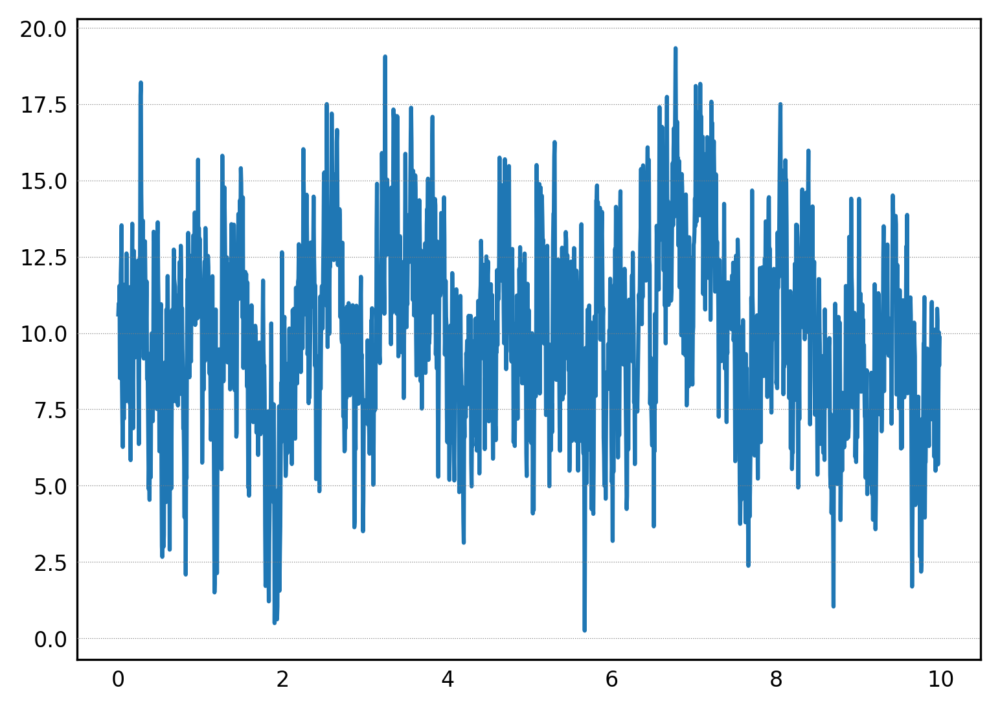
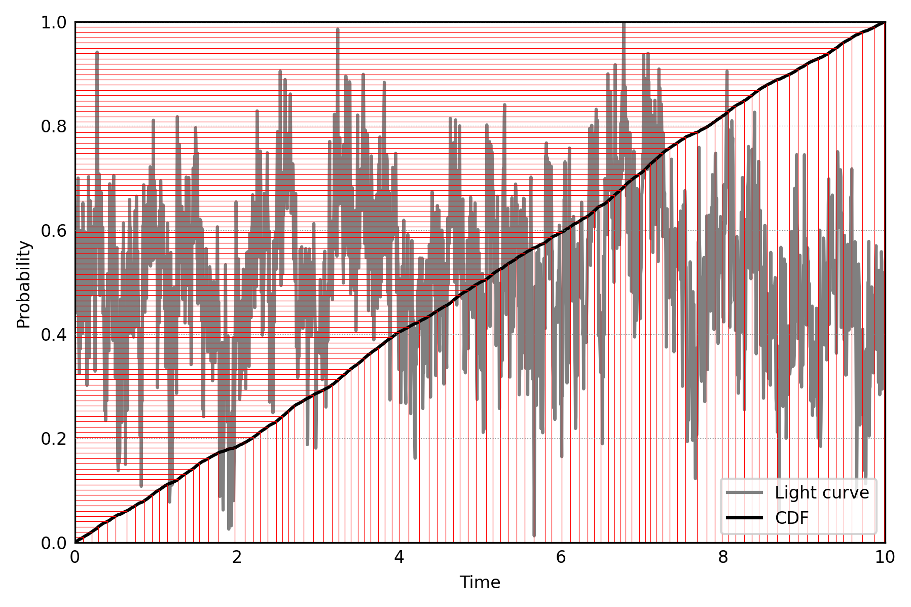

[1]:
%load_ext autoreload
%autoreload 2
%matplotlib inline
import copy
import glob
import numpy as np
import matplotlib as mpl
import matplotlib.pyplot as plt
params = {
'font.size': 7,
'xtick.major.size': 0,
'xtick.minor.size': 0,
'xtick.major.width': 0,
'xtick.minor.width': 0,
'ytick.major.size': 0,
'ytick.minor.size': 0,
'ytick.major.width': 0,
'ytick.minor.width': 0,
'figure.figsize': (6, 4),
"axes.grid" : True,
"grid.color": "grey",
"grid.linewidth": 0.3,
"grid.linestyle": ":",
"axes.grid.axis": "y",
"axes.grid.which": "both",
"axes.axisbelow": False,
'axes.labelsize': 8,
'xtick.labelsize': 8,
'ytick.labelsize': 8,
'legend.fontsize': 8,
'legend.title_fontsize': 8,
'figure.dpi': 300, # the left side of the subplots of the figure
'figure.subplot.left': 0.195, # the left side of the subplots of the figure
'figure.subplot.right': 0.97, # the right side of the subplots of the figure
'figure.subplot.bottom': 0.145, # the bottom of the subplots of the figure
'figure.subplot.top': 0.97, # the top of the subplots of the figure
'figure.subplot.wspace': 0.2, # the amount of width reserved for space between subplots,
# expressed as a fraction of the average axis width
'figure.subplot.hspace': 0.2, # the amount of height reserved for space between subplots,
# expressed as a fraction of the average axis height
}
mpl.rcParams.update(params)
[2]:
def find_inverse(real, imaginary, N):
# Form complex numbers corresponding to each frequency
f = [complex(r, i) for r, i in zip(real, imaginary)]
f = np.hstack([0, f])
# Obtain time series
return np.fft.irfft(f, n=N)
def scale_lc(lc, mean, rms):
lc_mean = np.mean(lc)
lc_std = np.std(lc)
return ((lc - lc_mean) / lc_std * rms + 1) * mean
def timmerkoenig(pds_shape, mean, rms):
pds_size = pds_shape.size
real = np.random.normal(size=pds_size) * np.sqrt(0.5 * pds_shape)
imaginary = np.random.normal(size=pds_size) * np.sqrt(0.5 * pds_shape)
imaginary[-1] = 0
flux = find_inverse(real, imaginary, N=2 * pds_size)
rescaled_flux = scale_lc(flux, mean, rms)
return rescaled_flux
Let us start with a standard light curve simulation with the Timmer & Koenig method:
[3]:
from astropy.modeling import models
pds_model = \
models.PowerLaw1D(x_0=1, alpha=1, amplitude=1)
nyq = 100.
freq = np.linspace(0, nyq, 1000)[1:]
pds_shape = pds_model(freq)
mean = 10
rms = 0.3
dt = 0.5 / nyq
flux = timmerkoenig(pds_shape, mean, rms)
times = dt * np.arange(flux.size)
plt.plot(times, flux)
[3]:
[<matplotlib.lines.Line2D at 0x7fd1916a8e50>]

Simulating event times with the inverse CDF method¶
Given a positive-definite light curve (generated, e.g., with the method by Timmer & Koenig), we treat it as a probability distribution: we calculate the cumulative distribution function by calculating its cumulative sum and normalizing to 1. Then, we generate random numbers uniformly distributed between 0 and 1 (horizontal lines) and take the event times at the corresponding values of the CDF (vertical lines).
[4]:
from scipy.interpolate import interp1d
def cdf_from_lc(lc, dt):
cdf = np.cumsum(lc)
cdf = np.concatenate([[0], cdf])
cdf /= cdf.max()
return cdf
# cdf_times = np.concatenate([[0], dt / 2 + time])
cdf_values = cdf_from_lc(flux, dt)
cdf_times = np.arange(cdf_values.size) * dt
cdf_inverse = interp1d(cdf_values, cdf_times)
plt.plot(times, flux / flux.max(), color="grey", label="Light curve")
plt.plot(cdf_times, cdf_values, color="k", label="CDF")
for prob_val in np.linspace(0, 1, 100):
time = cdf_inverse(prob_val)
plt.plot([0, time], [prob_val, prob_val], color="r", lw=0.3)
plt.plot([time, time], [0, prob_val], color="r", lw=0.3)
plt.xlabel("Time")
plt.ylabel("Probability")
plt.ylim([0, 1])
plt.xlim([0, 10])
plt.legend(loc="lower right");
plt.tight_layout()
plt.savefig("CDF_lc.jpg")

The same method can be used, in principle, to simulate variates from any probability distribution. The only requirement is that the input distribution is positive definite. Stingray implements this method in stingray.simulator.base:
[5]:
from stingray.simulator.base import simulate_with_inverse_cdf
event_times = simulate_with_inverse_cdf(flux, 10)
[6]:
event_times
[6]:
array([0.3809308 , 0.10856514, 0.71888075, 0.54479831, 0.87783205,
0.45405823, 0.66623686, 0.62832368, 0.72111516, 0.25882679])
[ ]: